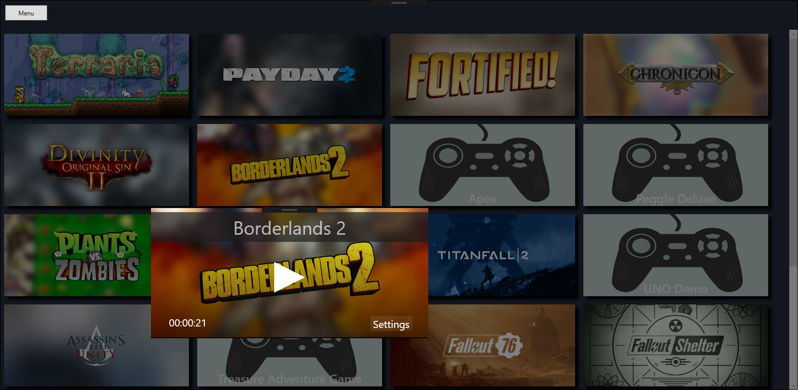

1 / 9
This screen is shown when the program is first started, or when the "lib.JSON" file is empty.
2 / 9
Same startup screen with the parental control options shown.
3 / 9
Service selector screen. Click any of the services that are used and the program will automatically gather info on any of the games installed from that service.
4 / 9
Custom game or program addition screen. User provides the name, an image, and the .exe path for the program.
5 / 9
This is the game selector for the parental control options. Anything selected here will be marked as "mature" and will be hidden from the child account.
6 / 9
The main game screen. This is shown on launch after the initial setup is complete. All games are shown for the parent account here. The game panels wrap dynamically with program size.
7 / 9

Game screen shows when a game is clicked. Time spent is shown in the bottom left and the settings menu button is shown on the right. Game is launched with the play button in the middle.
8 / 9
Game settings menu. Uninstall opens the Windows uninstall tool. Hide removes the games panel from the main screen. Change details opens a modified version of the custom exe menu and allows the user to change the name and image of the program.
9 / 9
Main menu button. The user can rescan the services for new games, add a new custom program, or log out to let a child account log in.
❮
❯
A unified video game launcher. Allows the user to launch games from the
seven major game launchers. Uses APIs from all seven launchers to allow
easy access and statistics tracking for games.